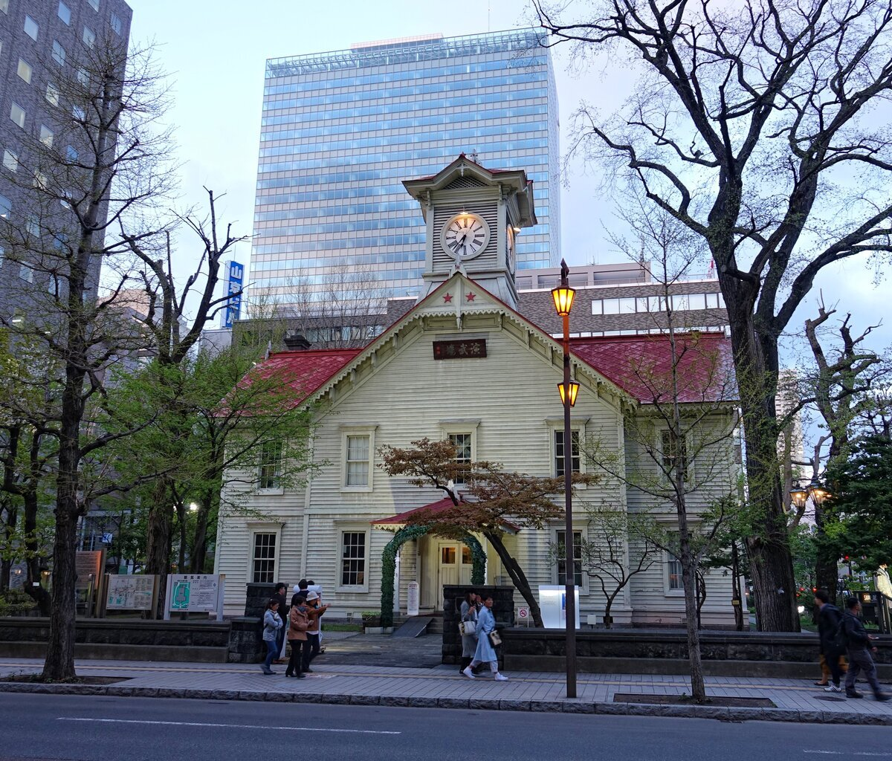
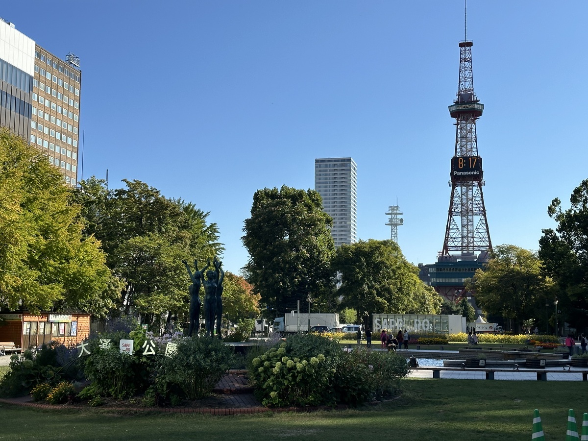
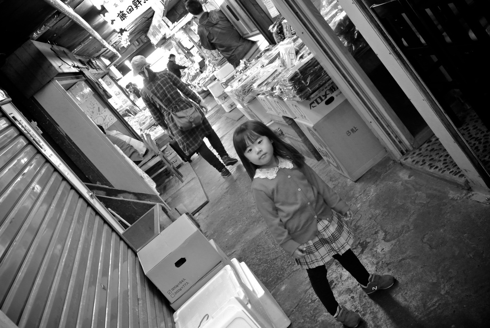
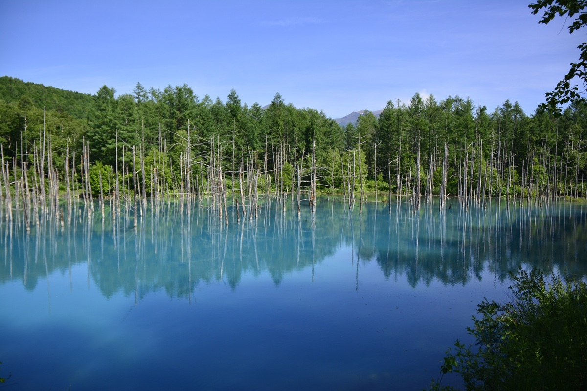
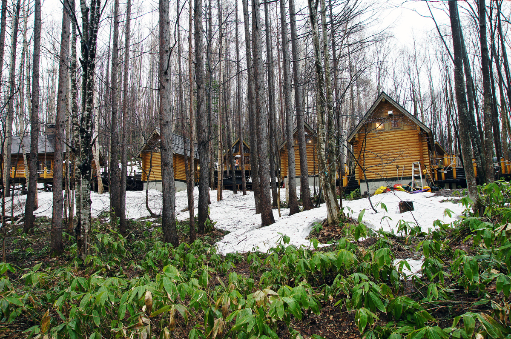
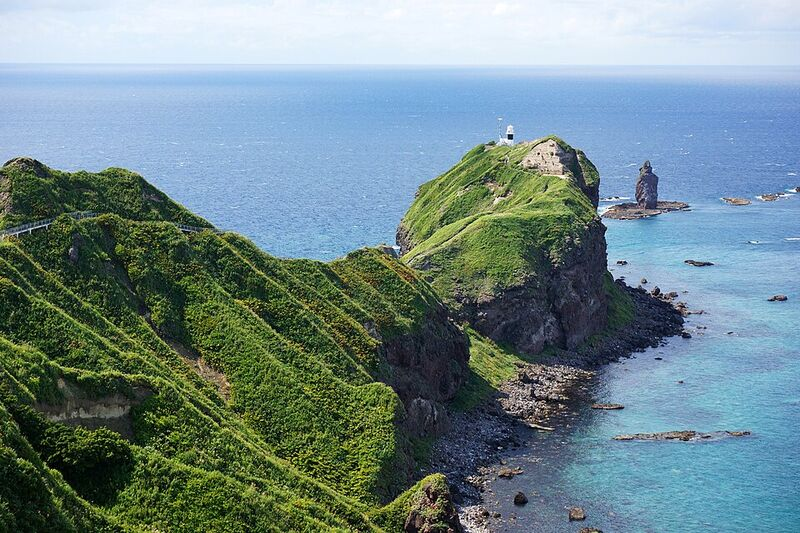
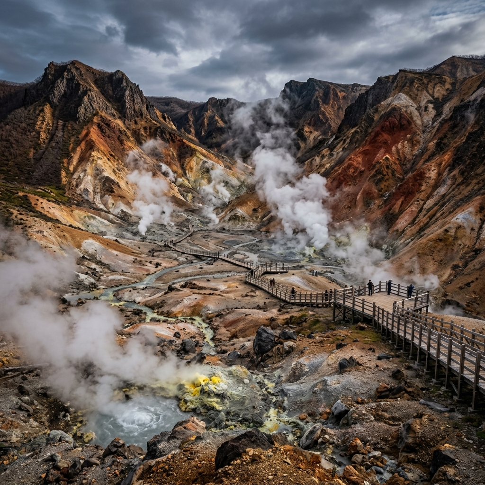

상세 일정 미리보기
우리가 직접 가서 보게 될 멋진 풍경들이에요!

삿포로의 상징, 시계탑
비행기 타고 오시느라 고생하셨습니다! 공항에서 내리자마자 삿포로 시내로 편하게 들어오면 가장 먼저 보게 될 예쁜 하얀색 목조 건물입니다. 여기서 우리 가족 첫 단체 사진 예쁘게 찍을게요!
시원한 한 잔! 맥주 박물관
아빠가 좋아하실 만한 곳입니다! 옛날 붉은 벽돌 공장을 개조해서 만든 멋진 박물관이에요. 홋카이도에서만 맛볼 수 있는 '삿포로 클래식' 생맥주를 바로 뽑아서 시원하게 한 잔 들이켜면 피로가 싹 날아갈 겁니다.

반짝이는 오도리 공원과 맛있는 저녁
해가 질 때쯤 오도리 공원을 걸으면서 TV 타워 불빛을 구경하고, 삿포로에서 제일 번화한 '스스키노' 거리로 넘어갑니다. 첫날 저녁 메뉴는 삿포로 명물인 양고기 화로구이(징기스칸)! 입에서 살살 녹는 고기를 대접할게요.

싱싱한 해산물 가득, 니조 시장
둘째 날 아침은 시장 구경부터 시작합니다! 삿포로의 주방이라 불리는 곳이에요. 아침 식사로 갓 잡은 게살, 연어알, 성게알이 듬뿍 올라간 덮밥(카이센동)을 먹으러 갈 거예요. 바다 맛 제대로 느끼실 수 있을 겁니다.

그림 같은 언덕과 신비한 청의 호수
렌터카나 택시를 타고 자연이 끝내주는 비에이로 넘어갑니다. 에메랄드 물감을 풀어놓은 듯한 파란 '청의 호수'를 구경하고, 언덕 전체가 무지개색 꽃으로 덮인 '사계채의 언덕'에서 트랙터를 타고 편하게 구경할 거예요!

보랏빛 라벤더와 숲속 동화마을
후라노로 넘어가서 엄마가 정말 좋아하실 끝없는 보라색 라벤더 밭(팜 토미타)을 걷고, 엄청 달콤한 멜론도 먹을 거예요. 저녁에는 깊은 숲속에 조명이 켜지는 통나무집 마을 '닝구르 테라스'에서 요정이 나올 것 같은 야경을 봅니다.

가슴이 뻥 뚫리는 푸른 바다, 샤코탄
셋째 날은 바다 쪽으로 갑니다! 물이 너무 맑아서 '샤코탄 블루'라고 부르는 엄청난 해안 절벽을 구경할 거예요. 탁 트인 바다를 보면서 스트레스 싹 날리고, 점심으로는 여기서 제일 유명한 성게알(우니)을 먹을 겁니다!

감성 가득한 운하 마을, 오타루
분위기 좋은 오타루 운하 옆을 걷고, 예쁜 오르골 소리가 가득한 가게도 구경합니다. 맛있는 치즈케이크도 먹고요! 밤에는 편하게 케이블카를 타고 산에 올라가서, 바다와 마을이 반짝이는 최고의 야경을 선물해 드릴게요.

피로를 싹 풀어줄 료칸 온천, 노보리베츠
여행의 마지막은 뜨끈한 온천입니다! 연기가 폴폴 나는 화산 계곡(지옥계곡)을 잠깐 구경하고, 최고급 일본식 료칸에서 맛있는 가이세키 정식을 먹고 천연 온천물에 푹 담그며 여행의 피로를 완벽하게 풀고 공항으로 갈게요!